UDN
Search public documentation:
KismetExamplesCH
English Translation
日本語訳
한국어
Interested in the Unreal Engine?
Visit the Unreal Technology site.
Looking for jobs and company info?
Check out the Epic games site.
Questions about support via UDN?
Contact the UDN Staff
日本語訳
한국어
Interested in the Unreal Engine?
Visit the Unreal Technology site.
Looking for jobs and company info?
Check out the Epic games site.
Questions about support via UDN?
Contact the UDN Staff
Kismet示例
概述
概念
序列
Kismet通过执行针对关卡中某些事件及条件做出响应的一系列动作进行工作。每个系列或相关系列集合可以认为是一个 sequence(序列) 。每个关卡，无论是动态载入关卡还是永久型关卡，默认都有一个基本序列。这些序列构成了一个层次结构，大部分情况下，序列都是自包含的，但有个例外是动态载入关卡的序列可以访问父项永久性关卡序列中的元素。 除了任何关卡的基本序列外，如果您需要，关卡中的动作、事件、条件及变量集合都可以放入到新的序列或 子序列 中。
除了任何关卡的基本序列外，如果您需要，关卡中的动作、事件、条件及变量集合都可以放入到新的序列或 子序列 中。
 再次说明，这些序列所构成的层次结构，允许沿着层次结构向上访问，但相反则不允许。这也就是说，如果要访问另一个序列中的某个变量或者类似的东西，那么该序列在层次结构中必须直接位于上级。如果两个序列都具有相同的父项序列，那么它们仅能访问变量名称在父项序列中存在而在另一个子序列中不存在的变量。
序列是组织管理您的Kismet的很好的方法。您所创建的新的序列可以有任何数量的输入或输入及变量连接(通过使用Sequence Activated事件、Finish Sequence 动作和 Proceduralism（程序化）
在Kismet中，Proceduralism(程序化)是指通用构建序列 (在这里，这意味着一个动作系列或完整的子序列)，它们使用连接到输入端的 Remote Events(远程事件)和连接到变量连接上的Global Variables(全局变量)，然后在这些变量上执行一些动作或者通过使用这些变量来执行某种动作。从本质上讲，它使用了序列的思想重新创建了类似于标准编程中函数或处理过程的功能。为了执行程序序列，您仅需要简单地设置 Global Variables(全局变量)的值，然后使用一个 Activate Remote Event(激活远程事件)动作触发相关的 Remote Event(远程事件)来激活那个序列即可。
为了解释这个思想，想象一下您想快速地将一个Actor放置到另一个Actor的位置和旋转度所在处，然后附加它。完成这个处理过程的正常序列应该是这样的：
再次说明，这些序列所构成的层次结构，允许沿着层次结构向上访问，但相反则不允许。这也就是说，如果要访问另一个序列中的某个变量或者类似的东西，那么该序列在层次结构中必须直接位于上级。如果两个序列都具有相同的父项序列，那么它们仅能访问变量名称在父项序列中存在而在另一个子序列中不存在的变量。
序列是组织管理您的Kismet的很好的方法。您所创建的新的序列可以有任何数量的输入或输入及变量连接(通过使用Sequence Activated事件、Finish Sequence 动作和 Proceduralism（程序化）
在Kismet中，Proceduralism(程序化)是指通用构建序列 (在这里，这意味着一个动作系列或完整的子序列)，它们使用连接到输入端的 Remote Events(远程事件)和连接到变量连接上的Global Variables(全局变量)，然后在这些变量上执行一些动作或者通过使用这些变量来执行某种动作。从本质上讲，它使用了序列的思想重新创建了类似于标准编程中函数或处理过程的功能。为了执行程序序列，您仅需要简单地设置 Global Variables(全局变量)的值，然后使用一个 Activate Remote Event(激活远程事件)动作触发相关的 Remote Event(远程事件)来激活那个序列即可。
为了解释这个思想，想象一下您想快速地将一个Actor放置到另一个Actor的位置和旋转度所在处，然后附加它。完成这个处理过程的正常序列应该是这样的：
 现在，想象一下您需要在不同的Actors上重复地执行同样的动作序列。显然，每次需要这个序列时复制该序列是可以帮助您完成这个处理的，但是这会使您的Kismet工作区变得混乱不堪。
现在，想象一下您需要在不同的Actors上重复地执行同样的动作序列。显然，每次需要这个序列时复制该序列是可以帮助您完成这个处理的，但是这会使您的Kismet工作区变得混乱不堪。
 作为比较，这个序列的程序化版本如下所示：
作为比较，这个序列的程序化版本如下所示：
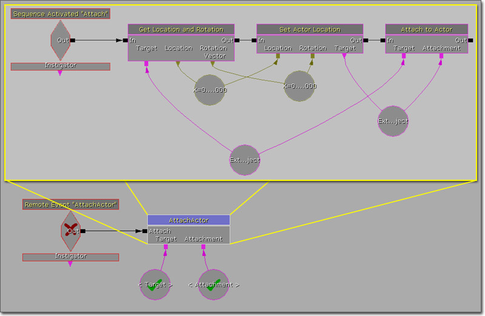
通过将这个序列程序化处理，那么每次需要时可以重复地使用这个单独的程序化序列，仅需要设置变量和激活事件即可。 当您想对序列进行修改时，就会体现出这个技术的真正优势。这时您不必到处寻找多个需要修改的版本，而仅需修改某个位置的一个单独序列即可。Events(事件)
事件是Kismet的基础。触发这些事件来对某些预先确定或动态的情况作出响应，并且这些事件负责启动执行序列。基本的思想是游戏中发生某些事情，然后在Kismet中触发对应的事件来使得执行一些列动作，对这个事件作出响应。 在Kismet中有几种用于触发序列的事件类型。以下描述了几个常用的事件。Level Events(关卡事件)
Level Loaded(关卡已加载)事件是个根据包含该序列的关卡的状态来触发序列的一个非常有用的事件。这些状态是：- Loaded and Visible(已加载并可见) - 当关卡已经加载到内存中并处于可见状态时触发状态。这对于那些当关卡变得可见时需要激活某些序列的动态载入关卡是有用的。
- Beginning of Level - 当关卡第一次加载时激活该项。这对于那些仅在第一次加载关卡时需要发生一次的关卡事件是有用的。
- Level Reset(关卡重置) - 任何时候当重置关卡时触发该项。这对于那些关卡每次启动或重新启动都应该发生的事件是有用的。
Player Interaction Events(玩家交互事件)
某些事件是基于玩家和关卡中的Triggers（触发器）和TriggerVolumes (触发器体积)的交互状态来进行触发的。Touch(触摸)事件
Touch(触摸)事件是当一个Actor侵占(或接触)了另一个Actor时触发该事件。从技术上讲该事件并不仅限于由玩家触发的Trigger或TriggerVolume，但目前为止这是这类型事件的最通用的应用。这种类型的事件用于创建可以由玩家接近而触发的序列。Used(已使用)事件
Used事件是由玩家在某些特定的Actor范围内（通常是Trigger）按下"Use"键(默认是'E')而触发的事件。这种类型的事件用于创建由具有目的意图的玩家启动的序列，比如按下按钮，旋转开关等。Mover（移动者） 事件
Mover事件用于创建关卡中的电梯或移动的平台，当玩家站到电梯上时激活该电梯或平台。这个事件提供了一些功能：“打开”、“关闭”及在关闭之前保持打开状态一段固定时间。 首先，从内容浏览器中选择您想用作为您的平台的静态网格物体。然后，在视口中右击并从关联菜单中选择 Add Actor(添加Actor) > Add InterpActor(添加InterpActor)... 。 现在，弹出了InterpActor的属性，展开 Collision(碰撞) 部分，然后确保 Collision Type(碰撞类型) 设置为 COLLIDE_BlockAll 。
现在，弹出了InterpActor的属性，展开 Collision(碰撞) 部分，然后确保 Collision Type(碰撞类型) 设置为 COLLIDE_BlockAll 。
 选中该 InterpActor ，打开Kismet，右击Kismet工作区并从关联菜单中选择 New Event Using InterpActor(使用InterpActor新建事件)... > Mover 。
选中该 InterpActor ，打开Kismet，右击Kismet工作区并从关联菜单中选择 New Event Using InterpActor(使用InterpActor新建事件)... > Mover 。
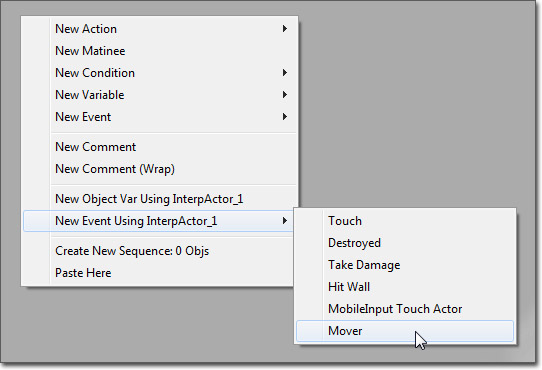
这将会放置一个专用的Mover事件，它具有一个预先连接的Matinee,你可以使用该Matinee来控制平台的运动。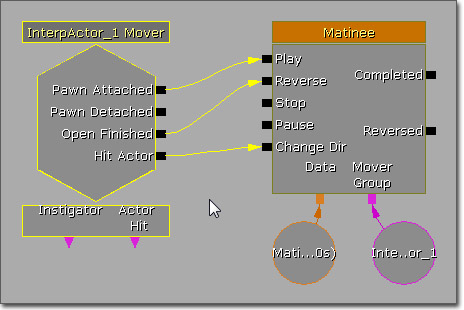
从那里开始，您仅需要在Matinee中对您的运动进行关键帧设置，那么 InterpActor就应该可以移动并支撑玩家了。当玩家接触该InterpActor 时，平台应该开始移动。 有很多方法进行简单的设置。您不需要右击Kismet 并添加InterpActor 作为Mover 。您可以自己放置一个Matinee，然后通过您需要的其它Kismet动作触发它。Conditions(条件)
Conditions(条件)是特殊的序列对象，它允许一个序列根据某些标准分支为两个或多个方向。这些条件和标准编程中的条件语句类似，比如 If/Else语句或switch 语句。这使得Kismet序列具有了基本的决策功能，使得它更加具有的动态性和吸引力。 条件的应用示例包括：仅当变量是某个特定值或者玩家具有特定武器时才执行某个序列。 条件的高级应用可能包括：有多个序列，每个序列仅当Actor触发了特定类型的事件时才执行对应的序列。
条件的高级应用可能包括：有多个序列，每个序列仅当Actor触发了特定类型的事件时才执行对应的序列。

Loops(循环)
从标准编程中所借用的另一个概念是循环，用于将某个动作重复指定次数，直到满足某个条件为止，甚至可以无限地循环。根据循环的类型的不同，可以使用以下几种方式之一来完成。 简单的无限循环可以通过以下方式来完成：将一个序列尾部的动作的输出端连接到序列起始处的动作的输入端。这会导致序列不断地重复循环执行。
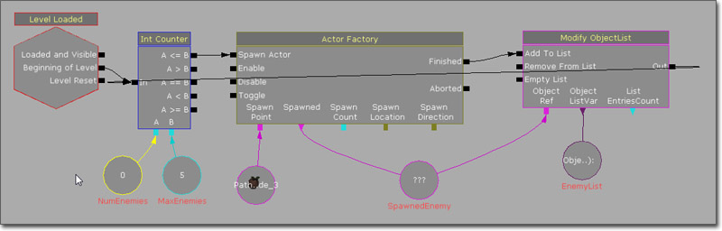
对于那些直到满足某个特定条件才停止重复的循环(比如While循环)，可以通过在应该重复的序列（该序列只有其中一个输出端允许序列继续重复执行）的开始或结束处放置一个条件来创建。在开始处放置条件创建 While循环。在结束处放置条件创建Do-While循环。 (点击获得完整尺寸)
Delay(延迟)
在Kismet序列中延迟一个序列或部分序列的执行是十分常见的，因为通常需要某些事件在相对于其他事件的特定时间发生，无论是关卡开始、玩家生成还是执行特定的动作都有这种需要。 延迟可以通过以下两种方式之一执行。第一种方法是使用 Delay 动作。这个动作允许您在属性中指定延迟时间量，或者通过连接一个变量来指定，当它的输入连接被激活时，在激活输出连接之前需要等待这么长的时间量。通过设置连接到Delay动作的变量的值，显然提供了让其他动作的结果决定延迟长度的功能。同时，这也非常清楚地指出在序列中将会发生延迟，因为有一个针对延迟的专用动作。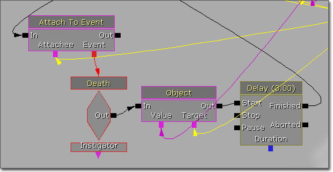
另一种执行延迟的方法是使用所有输入连接和输出连接的 Activate Delay(激活延迟) 功能。通过右击一个连接并选择 Set Activate Delay(设置激活延迟) ，您可以那个连接在继续激活之前需要延迟的时间(以秒为单位)。延迟时间的长度将会显示在Kismet工作区中连接的上面。从本质上讲，这和向序列中添加Delay动作一样，但是这不需要添加那个延迟动作。连接本身处理延迟。当然，这也意味着失去了具有可变延迟时间的功能，因为它是个常量的硬编码值。这可以节约空间，使得序列更加紧凑，但是它会使得发生延迟的地方变得不是那么明显。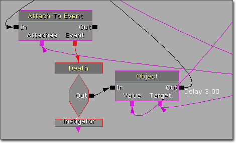
Global Variables(全局变量)
在Kismet中实现类似于全局变量的东西是可以的，尽管术语"global(全局)"仅限于当前永久性关卡和动态载入关卡的范围内。通过创建您在永久性关卡中所需的变量，并使用所有变量的 Var Name 属性赋予它们唯一的名称，然后就可以通过使用Named Variables(命名变量)来访问这些变量及它们的值。全局变量的概念不仅对于在其他(某个)序列中访问在位于另一个序列中的一个单独变量是有用的；而且它把您的所有变量放置于一个集中的位置，并可以使用多个 Named Variables（命名变量）， 而不必将具有多个连接一个变量连接到各种动作上，这使得可以更好的组织管理您的Kismet。 很重要的一点是需要将变量放置在最顶部的序列中（也就是永久性关卡的基本Kismet序列），或者至少要将其放置在所有其他序列的父项序列中，在该父项序列可以访问这些变量。同时，变量不能放置于当其他序列尝试访问这些变量时还没有加载的动态载入关卡中。Switches(开关)
Switches使得每次激活switch时可以执行不同的序列，或者根据所使用的Switch类型连续地执行或者随机地选择序列执行。 使用Switch的一个示例是在关卡中创建一个迷你游戏或任务，让玩家手机一定数量的道具。每次拾取一个道具，将会激活同样的 Switch 。每次激活将会按照顺序执行Switch 的输出。这些输出都可以连接到一个序列来执行某些特定的动作，比如更新变量、显示消息等，或者直到最后输出之前它们不执行任何处理。当道具已经收集完成时，最后的输出将会执行任何可能的动作。Gates（门关）
有时候，您想仅在其他一系列事件已经发生之后执行某个序列分支。您可能需要一个事件，可以在任何时候触发很多次的这个事件，但是在直到已经触发了其他事之前您不想触发该事件，比如锁着门首先需要被锁上后才能被打开。 其中一种设置这种关系的方法就是使用 Gate。这个动作可以打开或关闭，并且仅当它打开过程中激活输入时才激活它的输出。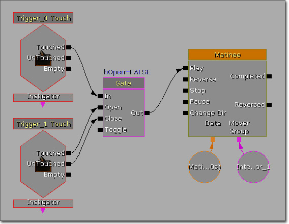
可替换的方法是使用一个全局Bool(布尔)变量，该变量存放着条件的状态，让"unlock(开锁)"事件设置该变量的值，然后在每次更新序列之前判断那个变量的值。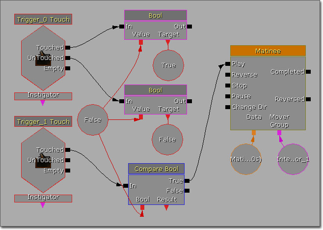
这样处理并不是十分理想，并且这也是最初创建[KismetReference#Gate][Gate]] 的动力。[KismetReference#Gate][Gates]]提供了执行同样功能更加清楚简单的方法。Object List(对象列表)
Object List(对象列表)的含义不言自明： 对象的列表。当需要把一组Object变量连接到一个动作上但又不希望出现有很多独立的变量节点的混乱情况时，那么这个是非常方便的。但是，Object Lists对象的功能非常强大，所具有的功能远远不止是组织和清理作用。Object Lists的应用方式类似于标准语言中的数组或者其他链表类型。比如，您可以把世界中生成的每个玩家的引用添加到一个Object List(对象列表)中，然后迭代这个列表并在每个玩家上执行一些动作。您也可以把进入到某个体积中的所有对象保存到一个列表中，然后对所有这些对象造成伤害来对另一个事件做出反应。 当使用 Object Lists时有三个主要的动作： Access ObjectList(访问对象列表)、IsIn ObjectList（是否在对象列表中）及Modify ObjectList（ 修改对象列表）。 IsIn ObjectList和Modify ObjectList一般用于向Object List中添加对象或者从Object List中删除对象。 Access ObjectList是当您在迭代某个对象列表来获得到当前项的引用时使用的动作。
Access ObjectList是当您在迭代某个对象列表来获得到当前项的引用时使用的动作。
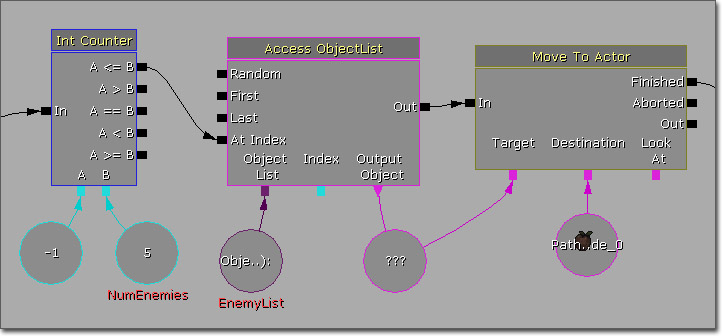
Timers（计时器）
Timer(计时器)动作一般用于测试地图及调试目的。在战争机器中，它用于单人游戏情境中，当您有很多组敌人，而您却又想知道每个战斗需要占用的时间时便可以使用这个功能。当您知道那场战斗所要占用的大体时间量时，那么便可以更加容易地知道什么时候触发和战斗相关的其它事件了。如果一场战斗通常花费30秒的时间，在15秒时您或许便想开始关闭玩家周围的城墙来增加紧迫感。Timer (计时器)事实上没有专门的用途，它仅是一个用于过场动画时间测量的好工具。示例
感应门
这个序列展示了一个当玩家位于门周围一定范围内时门自动打开的功能。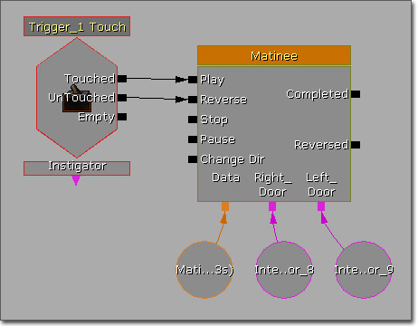
这个事件由和放置在门位置处的Trigger相关的Touch事件触发。Trigger的半径决定了玩家接近程度为多近时触发门。Touch事件的 Max Trigger Count(最大触发次数) 设置为0，从而可以无限次地触发这个事件。 Touch事件的 Touched 输出激活可以产生打开门动画的Matinee的 Play 输入端。_UnTouched_ 输出激活Matinee的 Reverse 输出端，从而关闭门。手动门
这个序列展示了创建一个需要玩家按下'Used'键手动地打开的门的功能。 这个事件由和放置在门位置处的Trigger相关的Used事件触发。Touch事件的 Max Trigger Count(最大触发次数) 设置为0，从而可以无限次地触发这个事件。根据您期望玩家距离Trigger多远时可以打开门的设置的不同，可以调整 Interact Distance(交互距离) 。
Touch事件的 Used 输出激活可以产生打开门动画的Matinee的 Play 输入端。Matinee 的 Completed 输出端连接回到 Reverse 输入端，并且激活了3秒钟的延迟，从而使得在3秒钟之后关闭门。这个值可以根据您想让门保持打开状态的时间长度而进行调整。
设置该处理的另一个方式是：在Used事件的 Used 输出端和Matinee之间使用一个具有两个输出连接的Switch动作。第一个输出端连接到 Play 输入端来打开门，而第二个输出端连接到 Reverse 输入端来关闭门。这将允许玩家既可以打开门也可以关闭门，这样就不必使用循环或激活延迟了。
这个事件由和放置在门位置处的Trigger相关的Used事件触发。Touch事件的 Max Trigger Count(最大触发次数) 设置为0，从而可以无限次地触发这个事件。根据您期望玩家距离Trigger多远时可以打开门的设置的不同，可以调整 Interact Distance(交互距离) 。
Touch事件的 Used 输出激活可以产生打开门动画的Matinee的 Play 输入端。Matinee 的 Completed 输出端连接回到 Reverse 输入端，并且激活了3秒钟的延迟，从而使得在3秒钟之后关闭门。这个值可以根据您想让门保持打开状态的时间长度而进行调整。
设置该处理的另一个方式是：在Used事件的 Used 输出端和Matinee之间使用一个具有两个输出连接的Switch动作。第一个输出端连接到 Play 输入端来打开门，而第二个输出端连接到 Reverse 输入端来关闭门。这将允许玩家既可以打开门也可以关闭门，这样就不必使用循环或激活延迟了。
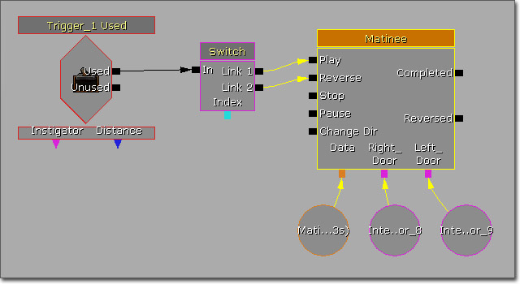
伤害导致的相机抖动
这个序列展示了如何是玩家相机播放一个预定义的相机动画，比如损坏相机抖动。 (点击获得完整尺寸)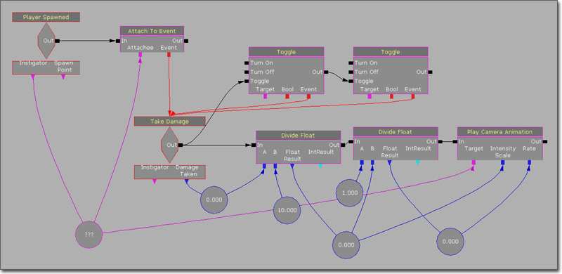
当玩家生成时，会通过使用 Attach To Event 动作将其附加到 Take Damage 事件。设置当每次玩家受到伤害时都触发该Take Damage事件( Damage Threshold = 1.0 )。同时设置将其触发无限次( Max Trigger Amount = 0 )，当事件被触发时重置它的伤害计数器(Reset Damage On Toggle = True )。_Reset Damage On Toggle(在触发时重置伤害)_ 是非常重要的，因为我们需要 Damage Taken(受到的伤害) 变量输出端总是输出这次收到的伤害，但是除非我们在每次触发该事件时切换事件来重置伤害计数器，否则它将输出事件的伤害计数器中的累计值。 将一个Float变量连接到 Damage Taken 变量输出端来存放受到的伤害量。 当触发Take Damage事件时，激活两个Toggle动作，它们设置切换Take Damage事件，及重置它的伤害计数器。 同时，Take Damage事件会激活一系列的计算，这些计算用于获得当播放CameraAnim(相机动画)时的播放速率及强度值。伤害量除以10.0。得到的结果就是CameraAnim的 intensity Scale(强度比例) 。然后用这个值的倒数作为CameraAnim的播放 Rate（速率） 。 Play Camera Animation(播放相机动画)动作用于播放伤害抖动相机动画。为了控制CameraAnim的 Intensity Scale(强度比例) 和 Rate（速率） ，可以右击Play Camera Animation动作并选择 Expose Variable(暴露变量) > Intensity Scale（强度比例） 和 Expose Variable(暴露变量)> Rate(速率) 来暴露相关变量。然后将两个Float变量连接到这两个新暴露的变量输入端，并将Player Spawned事件的 Instigator 对象变量连接到 Target 变量输入端。 注意: 仅当玩家正在使用自定义的相机类并且不依赖于计算相机视口的CalcCamera()方法时这个处理才有效。导航信标
这个序列展示了创建一个导航信标声音的方法，可以根据玩家到目标的距离来调整该声音的音调和音量。 (点击获得完整尺寸)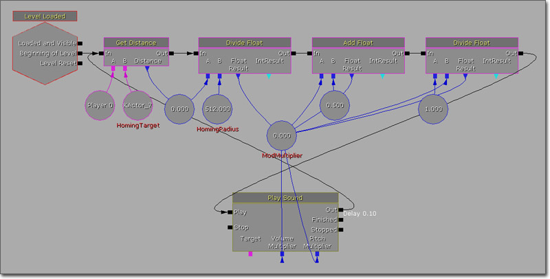
当通过Level Loaded事件使关卡开始运作时启动这个序列。这将激活 Get Distance 动作，用于获得从玩家到导航目标的距离，并将其存放到一个Float变量中。然后将这个值除以 HomingRadius 。这将会单位化距离值，然后将经过单位化处理后的结果进行偏置并求倒数来获得用作为音量和音调的最终值 ModMultiplier 。 Play Sound动作用于播放声音。Play输入端由调制计算中的最后一个Divide动作激活。暴露了 Volume Multiplier 和 Pitch Multiplier 变量输入端，并将 ModMultiplier 连接到它们上面。Finished输出端连接回到Get Distance输入端从而再次启动这个过程。重新生成哨兵AI
这个序列展示了如何生成及控制AI实体。 (点击获得完整尺寸) 这个序列由Level Loaded事件的 Beginning of Level 输出端触发。这将会激活具有可以在指定PathNode（路径节点）处生成一个单独AI实体的UTActorFactoryAI Factory 的Actor Factory。到这个 Spawned(生成的) AI的引用被保存到一个空的Object变量中，在示例中命名为 SpawnedBot 。
通过使用Actor Factory的 Finished 输出端激活两个独立的循环。第一个循环控制AI实体的开火状态。首先通过使用 Compare Object 条件将 SpawnedBot 变量和一个空的Object变量进行比较，该Compare Object条件在A = B输出端上激活了0.25秒的延迟。如果比较失败，那么将会在 SpawnedBot 和玩家之间执行线性碰撞检测。如果没有发现障碍物，那么 SpawnedBot 开始通过Start Firing At动作向玩家开火射击。Start Firing At的输出端连接回到 Compare Object条件来再次启动循环。如果在线性碰撞检测时发现了障碍物，那么 Spawned Bot 将停止开火，Stop Firing动作的输出端会连接回到 Compare Object动作的输入端来再次启动循环。
第二个循环控制AI实体的运动。同样，通过使用Compare Object条件将 SpawnedBot 变量和一个空的Object变量进行比较。如果比较失败，那么则通过使用Move To Actor动作指示 SpawnedBot 想不通的路径节点移动。_Finished_ 输出端激活另一个 Move To Actor 动作，指示 SpawnedBot 向原始路径节点移动。第二个Move To Actor的Finished输出端连接回到Compare Object 条件的输入端从而重新启动循环。在这个持续的循环中不必启动延迟，因为在AI实体从一个位置向另一个位置移动的过程中，使用 Finished 输出端会产生一个自然的延迟。
Actor Factory动作的 Finished 输出端也会激活 Attach To Event动作，该动作将 SpawnedBot 和Death事件相关联。Death事件激活Set Object 动作，清除 SpawnedBot 的引用，从而使得两个循环不再继续执行。Set Object的输出端连接回到 Actor Factory的 Spawn Actor 的输入端，在这个过程中激活3.0秒的延迟，从而使得再重新生成AI实体之前有一些延迟。
这个序列由Level Loaded事件的 Beginning of Level 输出端触发。这将会激活具有可以在指定PathNode（路径节点）处生成一个单独AI实体的UTActorFactoryAI Factory 的Actor Factory。到这个 Spawned(生成的) AI的引用被保存到一个空的Object变量中，在示例中命名为 SpawnedBot 。
通过使用Actor Factory的 Finished 输出端激活两个独立的循环。第一个循环控制AI实体的开火状态。首先通过使用 Compare Object 条件将 SpawnedBot 变量和一个空的Object变量进行比较，该Compare Object条件在A = B输出端上激活了0.25秒的延迟。如果比较失败，那么将会在 SpawnedBot 和玩家之间执行线性碰撞检测。如果没有发现障碍物，那么 SpawnedBot 开始通过Start Firing At动作向玩家开火射击。Start Firing At的输出端连接回到 Compare Object条件来再次启动循环。如果在线性碰撞检测时发现了障碍物，那么 Spawned Bot 将停止开火，Stop Firing动作的输出端会连接回到 Compare Object动作的输入端来再次启动循环。
第二个循环控制AI实体的运动。同样，通过使用Compare Object条件将 SpawnedBot 变量和一个空的Object变量进行比较。如果比较失败，那么则通过使用Move To Actor动作指示 SpawnedBot 想不通的路径节点移动。_Finished_ 输出端激活另一个 Move To Actor 动作，指示 SpawnedBot 向原始路径节点移动。第二个Move To Actor的Finished输出端连接回到Compare Object 条件的输入端从而重新启动循环。在这个持续的循环中不必启动延迟，因为在AI实体从一个位置向另一个位置移动的过程中，使用 Finished 输出端会产生一个自然的延迟。
Actor Factory动作的 Finished 输出端也会激活 Attach To Event动作，该动作将 SpawnedBot 和Death事件相关联。Death事件激活Set Object 动作，清除 SpawnedBot 的引用，从而使得两个循环不再继续执行。Set Object的输出端连接回到 Actor Factory的 Spawn Actor 的输入端，在这个过程中激活3.0秒的延迟，从而使得再重新生成AI实体之前有一些延迟。
Kismet武器
这对序列展示了如何仅通过使用Kismet来创建即时射击武器的过程。它展示了如何使用 Traces(线性碰撞检测)、Actor Attachment（Actor附加）、Console Commands（控制台命令）、Console Events、Particle Events（粒子事件）及如何给Actor造成伤害。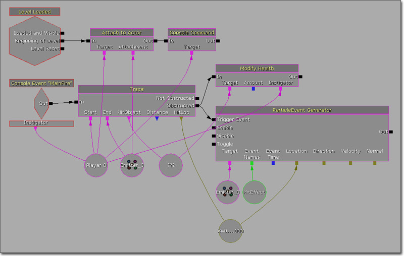
第一个序列设置玩家，附加发射器（这可以是任何可以动的Actor。这里使用发射器是因为它已经位于关卡中了，并且当在开火序列中使用它的位置时是没有关系的)到 WeaponPoint 插槽，沿着Y-轴设置3000.0 的 Relative Offset(相对偏移量) 。这个值代表了武器的有效范围。然后执行控制台命令 BEHINDVIEW 将游戏置为第三人称视角。为了使得附加物随着相机目标正确地旋转这是必要的。 和 MainFire 事件名称相关的Console Event 事件用于处理开火。修改 UDKInput.ini 文件，向当前的绑定中添加 CauseEvent MainFire 以便开射武器。Bindings=(Name="GBA_Fire",Command="CauseEvent MainFire | StartFire | OnRelease StopFire")这激活一个Trace 动作，执行从玩家到附加的Emitter（发射器）的线性碰撞检测。如果检测中某物阻挡了检测，意味着沿途碰到了某物体，然后使用由玩家作为 Instigator(发起者) 的 Modify Health 动作给 HitObject 造成伤害。同时，使用Particle Event Generator(粒子事件生成器)让Emitter(发射器)在碰撞物的位置处产生爆发的粒子，模拟碰撞效果，比如鲜血四溅。所使用的ParticleSystem(粒子系统)具有一个用于查找 HitEffect 事件的生成事件接收器模块，将所找到的是事件名称传入给 Event Names 变量输入端，产生10个粒子。 要想扩展效果，您也可以使用Trace动作的 Distance 变量来根据被碰撞的Actor和玩家的距离计算动态伤害量。另一个可能是，附加一个武器网格物体给玩家网格物体，或者您可以创建是一个拾取系统，它可以分离当前的武器网格物体，附加新的武器网格物体给玩家，并且修改所使用的Emitter actor来创建完整的武器仓库系统。可能这种类型的处理一般是通过脚本完成的，因为它通常是全局功能，但是考虑到您的游戏的某个关卡具有射击小游戏或类似的东西。这种类型的处理完全可以通过创建脚本来适当地完成。
一波涌现的敌人
这个序列示范了一个系统，该系统每次在前一波涌现的敌人被销毁后生成一波新的敌人。这个示例使用了循环、对象列表和条件。 (点击获得完整尺寸) 这个序列最初是由 Level Loaded事件的 Beginning of Level 输出端激活，尽管任何时间都可以激活它。这个序列播放一个Matinee，该Matinee将会打开一组其后面生成了大量敌人的门。
一旦门打开，Matinee就播放完成，具有UTActorFactoryAI Factory 的 Actor Factor将会产生一个AI实体。所生成的 Spawned（生成的） AI通过 Attach To Event动作附加到一个Death事件上。_Spawned（生成的）_ AI也会被添加到一个Object List中，并会判断列表中元素项的个数。如果敌人的数量小于最大值，那么序列将循环回到 Actor factory。否则，它将 Reverse反向() 播放Matinee来关闭门并结束生成AI的循环。
Death事件输出端删除了处理所有敌人的Object List中死亡的Pawn。同时会再次判断列表中敌人的数量。如果没有更多的敌人(比如列表中元素个数为0)，那么Matinee将会再次播放，开始生成下一轮敌人。
当然，这仅是个基本的架构。您可以轻松地扩展这个架构，跟踪涌现的敌人的波数，并在每一波敌人出现的开始和结束时显示个信息。您也可以增加每波中产生的敌人的数量(通过 MaxEnemies 变量)，从而使得游戏逐渐变难。
这个序列最初是由 Level Loaded事件的 Beginning of Level 输出端激活，尽管任何时间都可以激活它。这个序列播放一个Matinee，该Matinee将会打开一组其后面生成了大量敌人的门。
一旦门打开，Matinee就播放完成，具有UTActorFactoryAI Factory 的 Actor Factor将会产生一个AI实体。所生成的 Spawned（生成的） AI通过 Attach To Event动作附加到一个Death事件上。_Spawned（生成的）_ AI也会被添加到一个Object List中，并会判断列表中元素项的个数。如果敌人的数量小于最大值，那么序列将循环回到 Actor factory。否则，它将 Reverse反向() 播放Matinee来关闭门并结束生成AI的循环。
Death事件输出端删除了处理所有敌人的Object List中死亡的Pawn。同时会再次判断列表中敌人的数量。如果没有更多的敌人(比如列表中元素个数为0)，那么Matinee将会再次播放，开始生成下一轮敌人。
当然，这仅是个基本的架构。您可以轻松地扩展这个架构，跟踪涌现的敌人的波数，并在每一波敌人出现的开始和结束时显示个信息。您也可以增加每波中产生的敌人的数量(通过 MaxEnemies 变量)，从而使得游戏逐渐变难。